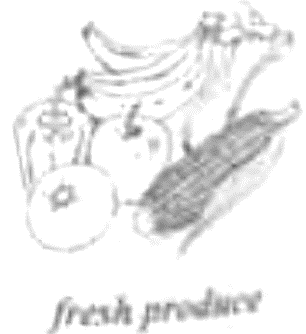
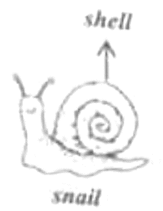

2021年北京市中考英语试题 · 阅读理解 第21、22、23、24、25、26、27、28、29、30、31、32、33题
三、阅读理解(每题2分,共26分)
阅读下列短文,根据短文内容,从短文后各题所给的A、B、C、D四个选项中,选择最佳选项。
A
Young Heroes for the Planet
Nowadays, people around the world are working to help our planet. Check out how the four young adults made a difference.

Saving Pandas When Jack was 11, he started a group to teach kids about pandas. He also sold toy pandas to raise money to protect pandas in danger. “I hope to encourage more people to care about pandas,” Jack says. |

Growing Right Kathy, 14, set up an organization to educate people about growing right plant in right places. She also wrote a book to help people learn what plants are native to (本土的)their area. |

Creating Energy At the age of 12, Linda invented a machine called SuperE. It collects heat from fields to make electricity(电), Linda says her invention creates electricity in a way that is less harmful to the environment. |

Cleaning Up Patrick, 13, joined the Ocean Heroes Camp last year. He started a project and picked up plastic waste around nearby lakes with his friends. The goal of the project was to fight plastic pollution. |
21. Who started a group to teach kids about pandas?
A Jack.B. Kathy.C. Linda.D. Patrick.
Jack.B. Kathy.C. Linda.D. Patrick.
22 How old was Linda when she invented SuperE?
A. 11.B. 12.C. 13.D. 14.
23. What was the goal of Patrick’s project?
A. To fight plastic pollution.B. To protect pandas in danger
C. To learn about native plants.D. To use heat to make electricity.
B
When I was in the eighth grade, my class was assigned(指派) to be friends with the second-grade kids. I got this little girl named Shelley. The first time I saw her, she was silent and cold. She was small for her age, and she didn’t play with the other kids in her class.
I tried all kinds of things to get her to talk to me. I bought her toys, crayons and candies. But try as I might, nothing worked. One time, I gave her a coloring book and said, “Shelley, now you can color at any time.”
Shelley looked at the coloring book and then looked up at me, and finally looked away. By that, I didn’t know how I was going to get through to the little girl, but I knew I wouldn’t give up on her.
One Friday, I decided to tell her a story about my childhood. I told her that I felt lonely when I was with my classmates, and how I thought only my teachers liked me. I also told her that every day was a battle(战役) for me and I fought back tears so people wouldn’t know how much I was hurting.
She sat there just listening, trying to decide whether I was lying or not. Finally, when my story ended, there were tears in her eyes. And then she did the unthinkable. She said, “Thank you.” From then on, Shelley was a different little girl. She started smiling and talking with other kids.
Looking back at this, I’m in awe(惊叹), because all I did was to help her realize that she wasn’t alone. I didn’t ask her to tell her story, because her story is my story.
24. What was Shelley like when the writer first saw her?
A. Cold.B. Lazy.C. Noisy.D. Slow.
25. In order to get through to Shelley, the writer ________.
A. wrote her a bookB. made her a toyC. drew her a pictureD. told her a story
26. Shelley changed a lot because she realized that ________.
A. her teachers loved herB. her classmates were kind
C. the writer understood herD. she had to study even harder
C

School Gardens Could Help Children Try More Vegetables
It’s not always enjoyable for children to eat vegetables. But what if a garden is built in the school? New research suggests that a gardening program in schools can increase children’s vegetable intake(摄入量) .
How the Study Was Carried Out
The study was carried out in eight schools. Each school was in the gardening program for one school year. Every child in grades 3-5 received a total of eighteen 60-minute lessons across the school year. In the program, each school built a garden, where children learned to grow their own fresh produce, like fruit and vegetables.
The Benefits Children Could Get
The study found that vegetable intake if the children who grew their own produce increased greatly across the year. Related studies show that increased vegetable intake can improve health and cut the risk of chronic diseases(慢性疾病). Not only are there benefits to health, increasing the variety of vegetables children are exposed(接触)to may also make mealtimes much easier.” Children who are often exposed to a variety of vegetables are more likely to try new foods,” explains Dr. Kerry Jones. For children, growing their own food is a powerful tool to increase their intake of the food.
28
Any opportunity to expose children to more vegetables is meaningful. “If children are learning about vegetables at school, it’s important to encourage this interest,” says Jones. Parents can listen to their children about what they have learned and read the handouts they bring home from school. Parents and children can also read books together. Younger children can enjoy reading stories about vegetables with parents who offer useful messages. Older children may enjoy searching through cookbooks with parents to find new dinner ideas to cook vegetables in a tasty way. Besides, a small planter box in a sunny part at home can encourage children to understand more about where their food comes from.
Teaching children to grow their own produce is a great way to increase their preference for the produce. If children are taught to enjoy vegetables early in life, they will probably continue eating vegetables in the long term.
27. What did children do in the gardening program?
A. They did research on new plants.B. They grew fresh produce at school.
C. They took home green vegetablesD. They built gardens for their classes.
28. Which of the following would be the best heading for Paragaph4?
A. Ideas to Encourage Children to Cook at Home
B. Ways to Expose Children to Vegetables at Home
C. Reasons Why Parents Should Understand Children
D. Suggestions Which Children Could Get from Parents
29. What can we learn from the program?
A. Parents’ support might improve children’s reading.
B. School programs could develop students’ creativity.
C. Doing studies can prepare students for future learning.
D. Hands-on experience may influence children’s preference.
D

Nature and culture are often seen as opposite ideas. What belongs to nature cannot be the result of human activities and on the other hand, cultural development is achieved against nature. However, this is not the only opinion on the relationship between nature and culture. Studies in the development of humans suggest that culture, whether taken as an effort against nature or a natural effort, is part of the development of the human species(物种).
Several modern writers saw the process of education as a struggle(斗争) against human nature. We are born with wild natures, such as eating and behaving in a disorganized way or acting selfishly. Education uses culture as a way to get us out of our widest natures; it is thanks to culture that the human species could learn to adapt(适应) , progress and raise itself above and beyond other species.
Over the past century and a half, however, studies in the history of human development have shown that the formation of culture is part of the biological adaptation. Consider, for example, hunting(打猎) . It seems to be an adaptation, which allowed humans to move into new and different areas, opening up the opportunity to change living habits. At the same time, the development of weapons(武器) is related to that adaptation-from rocks and stones to a set of hunting tools, and from hunting tools to rules relating to the proper use of weapons. Hunting also seems to be responsible for a whole set of bodily abilities, such as balancing on one foot. Just think of how this very simple thing is closely related to dance, a key expression of human culture. It is then clear that biological development and cultural development are closely tied.
The transmission of culture seems to be directly related to what’s in our blood. Just as snails carry their shells, so do we bring along our culture. However, culture is also passed on among people of the same time or among people belonging to different populations. We can learn how to make jiaozi even if we were born from Russian parents in Paris just as we can learn how to speak English even if none of our family or friends speak that language.
30. What is Paragraph 2 mainly about?
A Culture belongs to human nature.
B. Nature teaches humans how to adapt.
C. Humans are supposed to be well organized.
D. Education pushes the human species to progress.
31. Why does the writer talk about hunting in Paragraph 3?
A. To suggest some possible ways of changing living habits.
B. To stress the importance of tools in humans’ struggle for life.
C. To show how culture develops as humans adapt to the environment.
D. To explain why there is a need to call for the proper use of weapons.
32. The word “transmission” in Paragraph 4 probably means “________”.
A. systemB. spreadC. startD. spirit
33. What is the writer’s opinion on the nature-culture relationship?
A. Culture and nature are separate yet balanced.
B. Culture depends much on nature to progress.
C. Nature and culture are different but connected.
D. Nature follows the unwritten rules set by culture.
第二部分
本部分共6题,共20分。根据题目要求,完成相应任务。